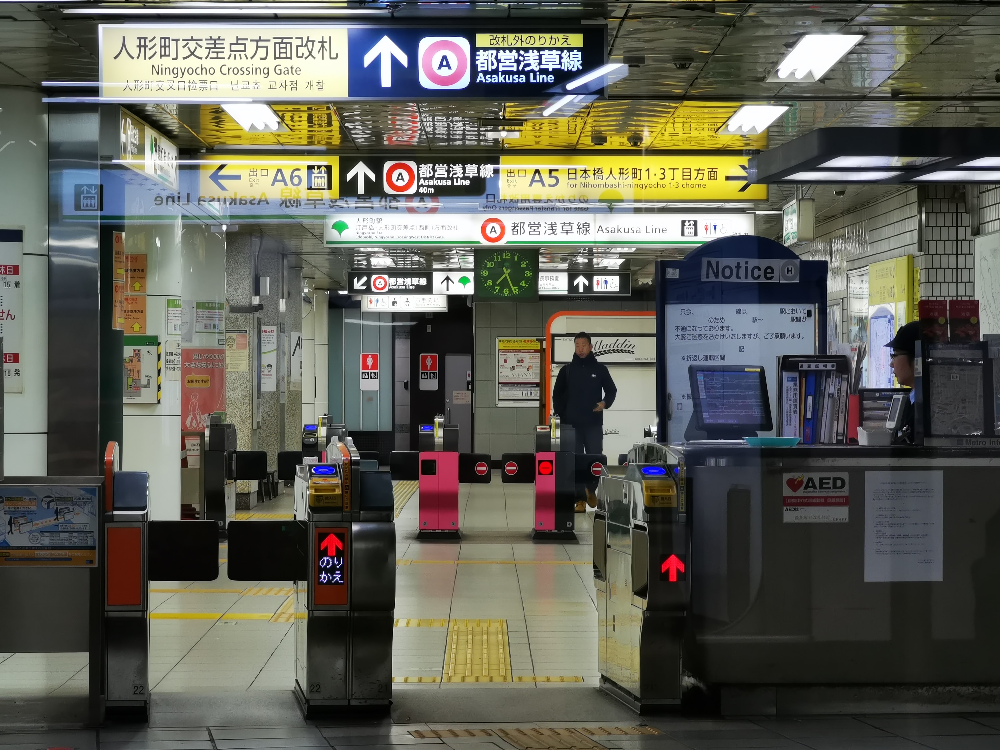

Transportation - Smart Cards and Tickets
Tickets
Tickets for trains and buses can be purchased at the ticket counters and machines located inside the stations. The price of the ticket depends on how far
you will travel, with further destinations resulting in a more expensive ticket. Since most local trains only have non-reserved seating, making a reservation
ahead of time is usually not necessary.
At the ticket machine, you will need to purchase a ticket for the amount indicated on the map which shows the cost for your trip. Afterwards, insert your money,
select the appropriate number of tickets, and follow the prompts accordingly. Don't forget to take your change!
If you need to purchase a ticket at the counter instead, you will need to inform the ticket salesperson of your destination, reservation preference, and other
additional information.
To use your ticket, insert it into the machine at the gate for your platform. Make sure that you take it out of the machine after it has been read, as you will
need it to exit the platform at the destination station.
The Japan Rail Pass (JR Pass) is another popular option for tourists in Japan. This ticket can be used on all train types, except for the Nozomi and Mizuho
Shinkansen. It can also be used on the Tokyo Monorail, Tokyo Metro, and other railway lines, with certain limitations. It may also be used on the JR Kanto, West
Japan JR Bus, and other JR bus lines, in addition to the JR-West Miyajima ferry. Please refer to their website for more information on requirements and limitations.
The JR Pass must be purhcased online outside of Japan, although it can be delivered to a Japanese address, and must be activated in-person at a JR office.
Travelers have the option to have a 7, 14, or 21-day pass, which cannot be extended. There is also a Green Pass available for those would like to enjoy the benefits of
the Green cars in shinkansen.
Smart Cards
There are 10 major types of smart cards (also referred to as IC cards) that can be used for buses and trains. The
type that you can purchase depends on your location. For example, if you were to begin traveling in Osaka,
then the only type of card you would be able to purchase would be an Icoca (offered by JR), or a Pitapa
(offered by private-owned companies). Cards available for purchase in the Tokyo area include Suica (JR owned)
and Pasmo (private-owned). Although the type of card is location-based, they can be used all across Japan
without any issue.
Although KanKanKanKou is a Kanto and Kansai area-focused website, we have provided all of the
major smart cards available for you below:
- Nimoca
- Hayakaken
- Sugoca
- Toica
- Manaca
- Icoca
- Pitapa
- Kitaca
- Suica
- Pasmo
IC cards are not limited to travel use—cardholders are also able to use them at convenience stores, arcades, and other locations instead of money. Simply look for the "IC" symbol.
Purchasing a card —
Smart cards can be purchased and recharged at the ticket machines and counters inside subway stations.
The cards can also be recharged on buses as well. Buyers will need to provide a refundable deposit of 500 yen (around $5 USD).
If you are planning to stay in Japan for two weeks or less, some of the cards have a tourist version that is only valid for a pre-defined period of time. These card usually have
a special design based on Japanese culture and come with special discounts. These cards may be purchased at airports.
Using your IC card — To use a smart card at any location, tap it against the IC reader for around one second until it has been approved. Due to its technology, the card does not
need to directly touch the reader. As such, as long as it is not a thick material, smart cards can be kept inside wallets, phone cases, and other accessories instead.
Some cards can even be used with Google and Apple Pay. This allows for convenient use and an easier way to keep track of your card when you are on the go.
IC cards may be used for shinkansen, however they require additional registration online or at a ticket machine, depending on the card.
